| 日付 | 2026年5月3日（日） - 2026年5月6日（水） | ||||
|---|---|---|---|---|---|
| 山域 | 飛騨の山 | ||||
| メンバー | 家族（妻） | ||||
| 山行形態 | 3泊4日キャンプ | ||||
| アクセス | 車 | ||||
| ルート (Map2) |
|
4日目
本日は白草山に登る予定だったが、朝起きたら空はどんより。
テントを片付けながら、どうしようかと考えていた時に、ふと頭に浮かんだのが霧訪山。
調べてみたら、ちょうど帰り道だし、軽そうな山だし、行ってみることにする。
駐車場に到着。標高880m。すでに何台か車が停まっている。人気の山のようだ。
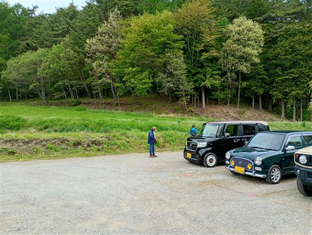
登山者用の駐車場で、他の利用は遠慮するよう書かれている。
こんな記載は初めて見た。たいていは、登山者は遠慮するように、と書かれるのだが。
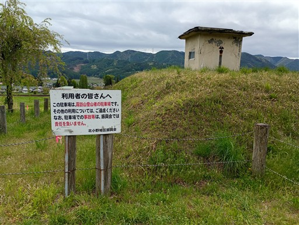
早速登山開始。立派な標識が立っている。
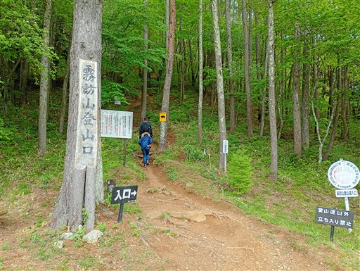
この山は茸山とのことで、登山道以外は立入禁止のようだ。
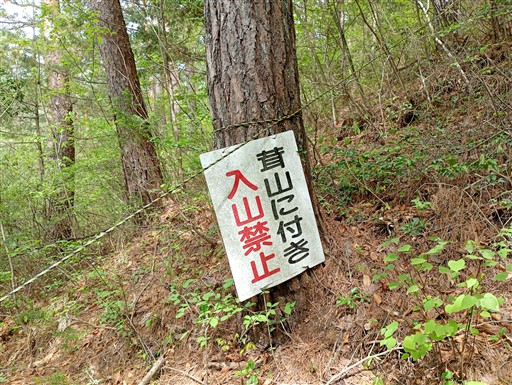
松の木が多い。この松は植えられたものなのだろうか？
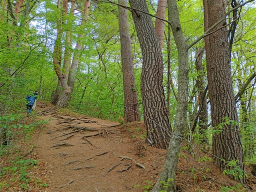
御嶽山大権現の石碑。
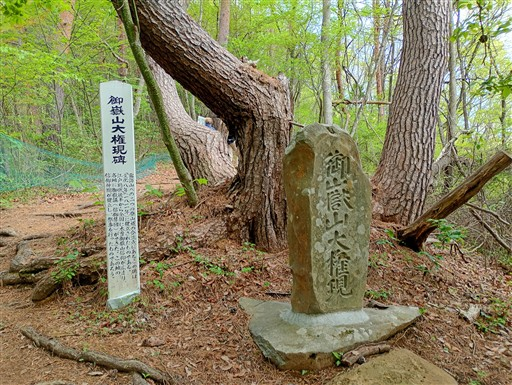
立ち入らないようにネットが張られている。
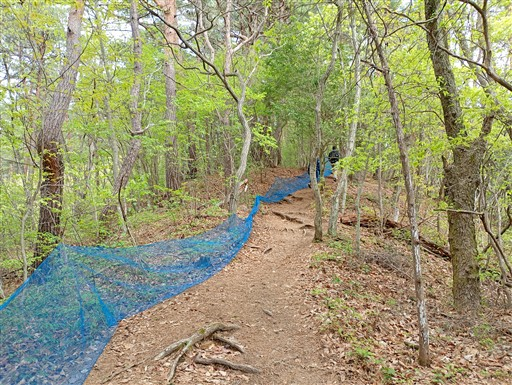
かっとり城跡の標識がある。鉄塔があるが、この場所が城跡なのだろうか？
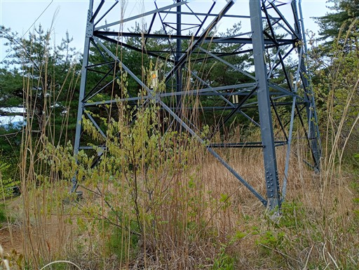
避難小屋。かなり粗末な避難小屋で、緊急事態以外に利用する気にはなれない。
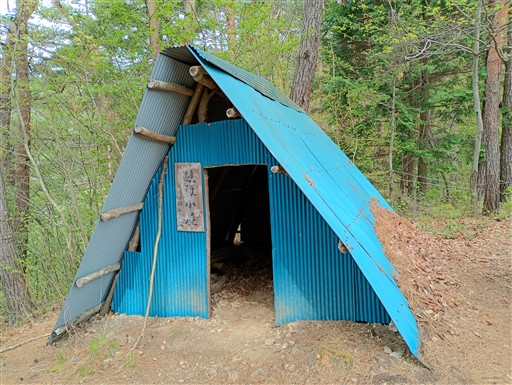
100mごとに標識がある。登山口は「あと1500m」だった。
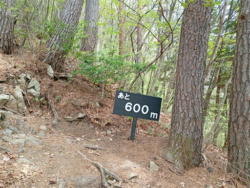
霧訪山山頂に到着。標高1306m。
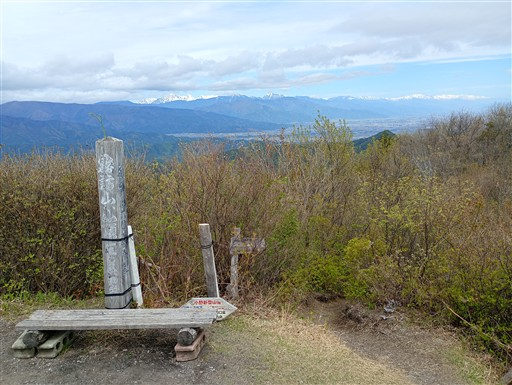
素晴らしい展望の広がる山頂。こちらは穂高岳～槍ヶ岳。
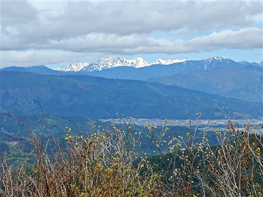
さらに北に続く後立山連峰。
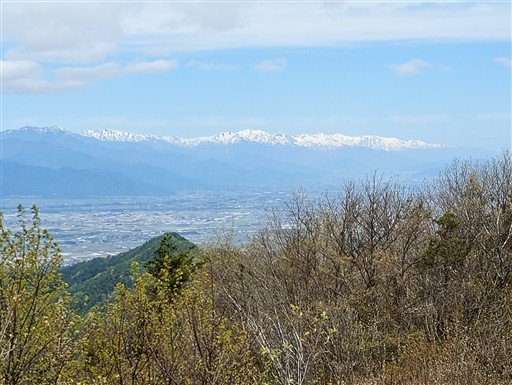
南アルプスの山々。仙丈ヶ岳や塩見岳が見えている。甲斐駒ヶ岳は雲の中だ。
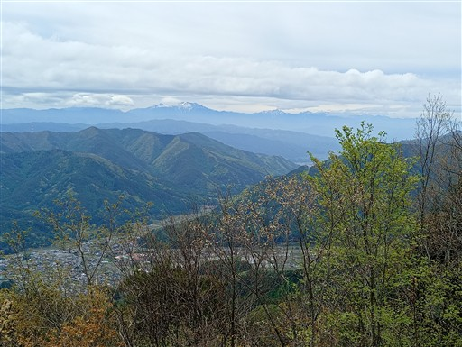
中央アルプスは縦に見る形になるので、北端の経ヶ岳のみ見えている。
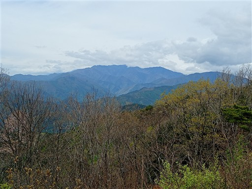
八ヶ岳は編笠山より高い山は雲の中。手前には霧ヶ峰が見えている。
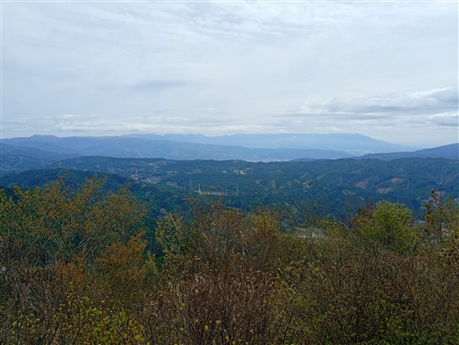
山頂の風景。多くの登山者で賑わっている。
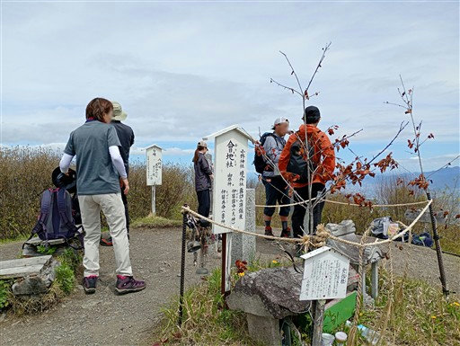
最初は往復登山を考えていたが、周回ルートで下山することにする。
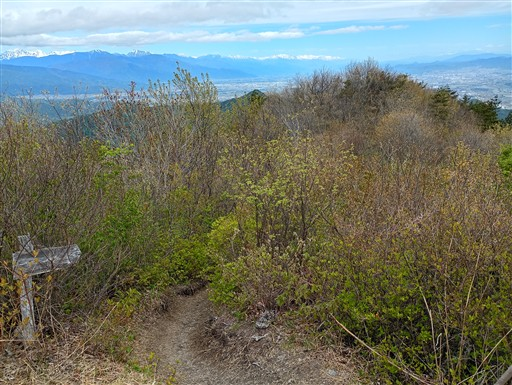
樹林帯の美しい道。
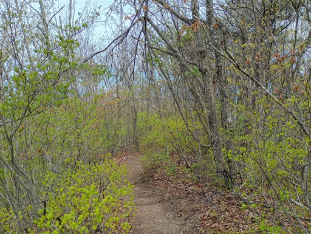
この辺りは檜の植林地帯。
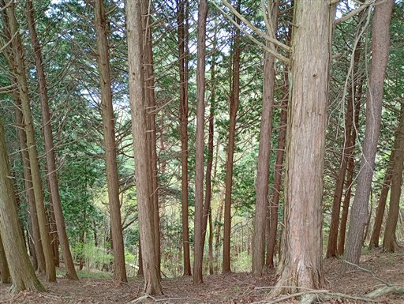
お次は松林。
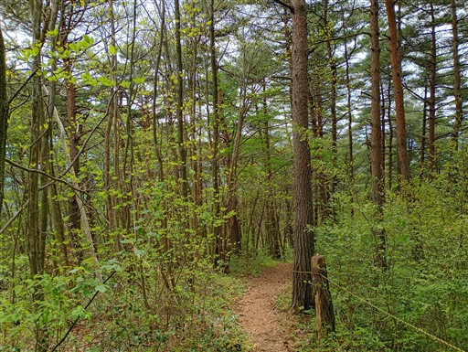
その後、スギ林が広がる。目まぐるしく植生が変わる。
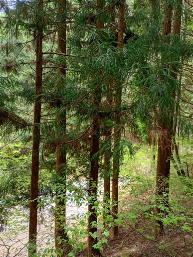
下りついた場所は林道の終点。
沢沿いを経由する道だと思っていたが、一旦車道に出てくるとは思わなかった。
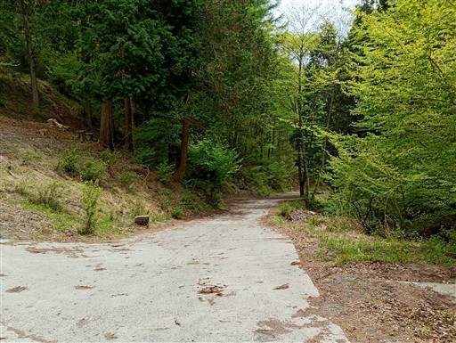
木橋を渡って再び登山道へ。
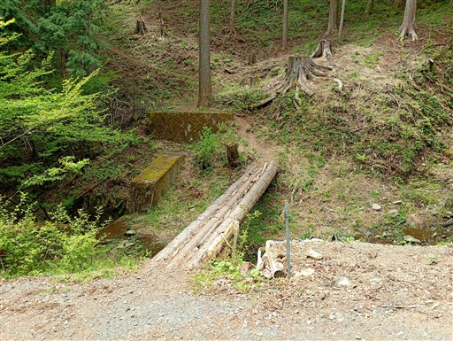
足元に咲くスミレの花。たくさん咲いている。
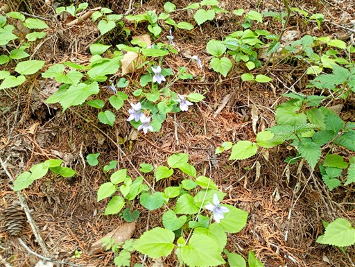
チゴユリ。
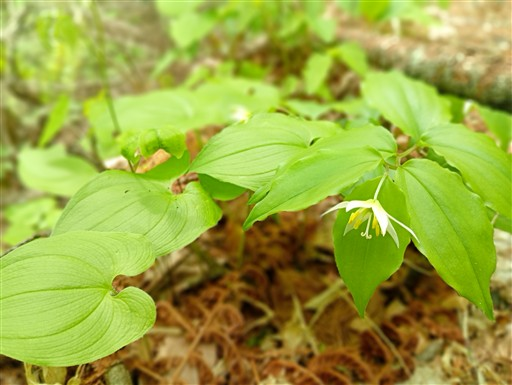
鉄塔。クロスの形でコンクリートが固められているのは初めて見た。
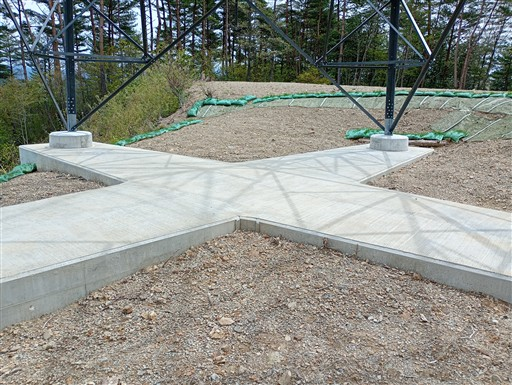
足元に咲く小さなツツジ。
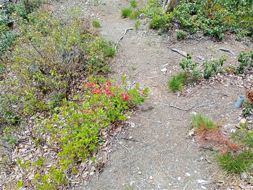
斜面をトラバース気味に登っていく。
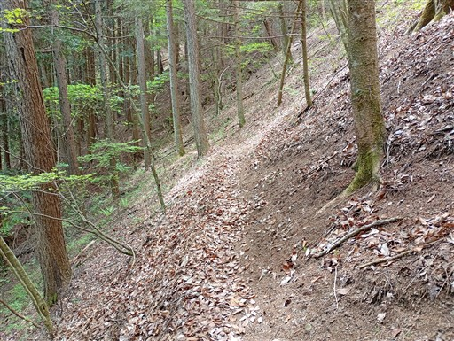
登りの時の登山道に合流。「崖注意」というほど注意すべき場所はなかった。
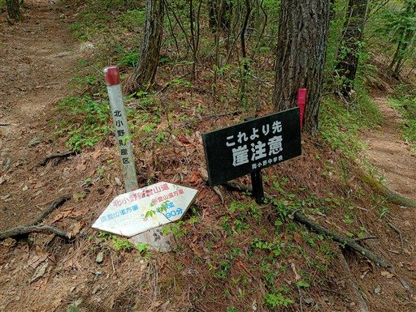
下山。
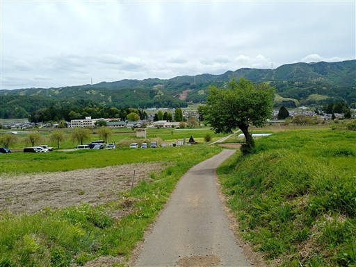
登山ノート。登山計画書の提出は不要と書かれている。あくまでノートだ。
霧訪山は軽い山歩きで素晴らしい展望が広がる山だった。
首都圏からわざわざ登りには来ないかもしれないが、何かのついでに登るのにちょうど良さそう。
少なくとも雲に覆われた白草山よりは良い山登りができたと思う。
これで今回の旅行はお終い。帰宅の途に就く。
天気が良いのは一日のみの旅行だったが、何よりメインの小秀山が素晴らしかった。
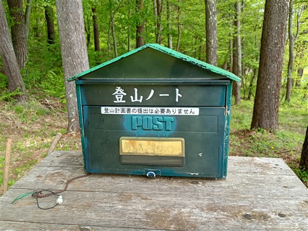